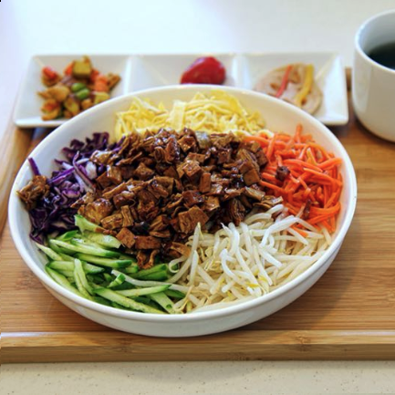
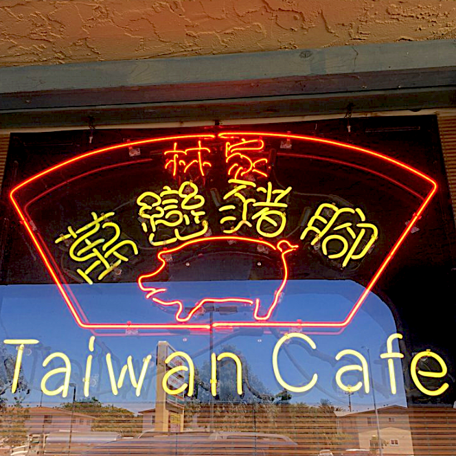
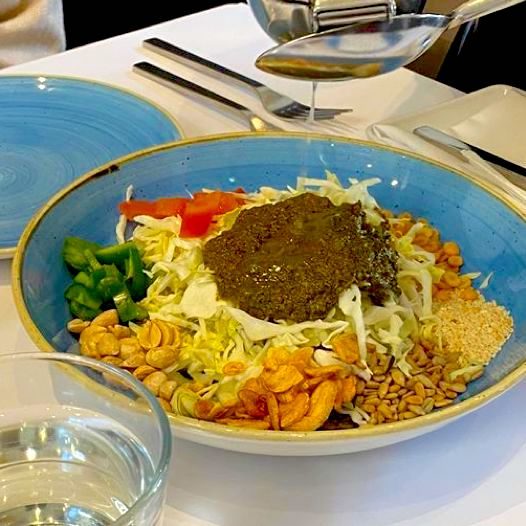

<!DOCTYPE html>
<head>    
    <meta http-equiv="content-type" content="text/html; charset=UTF-8" />
    
        <script>
            L_NO_TOUCH = false;
            L_DISABLE_3D = false;
        </script>
    
    <script src="https://cdn.jsdelivr.net/npm/leaflet@1.6.0/dist/leaflet.js"></script>
    <script src="https://code.jquery.com/jquery-1.12.4.min.js"></script>
    <script src="https://maxcdn.bootstrapcdn.com/bootstrap/3.2.0/js/bootstrap.min.js"></script>
    <script src="https://cdnjs.cloudflare.com/ajax/libs/Leaflet.awesome-markers/2.0.2/leaflet.awesome-markers.js"></script>
    <link rel="stylesheet" href="https://cdn.jsdelivr.net/npm/leaflet@1.6.0/dist/leaflet.css"/>
    <link rel="stylesheet" href="https://maxcdn.bootstrapcdn.com/bootstrap/3.2.0/css/bootstrap.min.css"/>
    <link rel="stylesheet" href="https://maxcdn.bootstrapcdn.com/bootstrap/3.2.0/css/bootstrap-theme.min.css"/>
    <link rel="stylesheet" href="https://maxcdn.bootstrapcdn.com/font-awesome/4.6.3/css/font-awesome.min.css"/>
    <link rel="stylesheet" href="https://cdnjs.cloudflare.com/ajax/libs/Leaflet.awesome-markers/2.0.2/leaflet.awesome-markers.css"/>
    <link rel="stylesheet" href="https://rawcdn.githack.com/python-visualization/folium/master/folium/templates/leaflet.awesome.rotate.css"/>
    <style>html, body {width: 100%;height: 100%;margin: 0;padding: 0;}</style>
    <style>#map {position:absolute;top:0;bottom:0;right:0;left:0;}</style>
    
            <meta name="viewport" content="width=device-width,
                initial-scale=1.0, maximum-scale=1.0, user-scalable=no" />
            <style>
                #map_b4bc99f75ac24616beefdece54b2cf34 {
                    position: relative;
                    width: 100.0%;
                    height: 100.0%;
                    left: 0.0%;
                    top: 0.0%;
                }
            </style>
        
</head>
<body>    
    
            <div class="folium-map" id="map_b4bc99f75ac24616beefdece54b2cf34" ></div>
        
</body>
<script>    
    
            var map_b4bc99f75ac24616beefdece54b2cf34 = L.map(
                "map_b4bc99f75ac24616beefdece54b2cf34",
                {
                    center: [37.45, -121.93],
                    crs: L.CRS.EPSG3857,
                    zoom: 10,
                    zoomControl: true,
                    preferCanvas: false,
                    dragging: false,
                }
            );

            

        
    
            var tile_layer_0c8b6b19e45c44f489754166c3e3e573 = L.tileLayer(
                "https://cartodb-basemaps-{s}.global.ssl.fastly.net/light_all/{z}/{x}/{y}.png",
                {"attribution": "\u0026copy; \u003ca href=\"http://www.openstreetmap.org/copyright\"\u003eOpenStreetMap\u003c/a\u003e contributors \u0026copy; \u003ca href=\"http://cartodb.com/attributions\"\u003eCartoDB\u003c/a\u003e, CartoDB \u003ca href =\"http://cartodb.com/attributions\"\u003eattributions\u003c/a\u003e", "detectRetina": false, "maxNativeZoom": 18, "maxZoom": 18, "minZoom": 0, "noWrap": false, "opacity": 1, "subdomains": "abc", "tms": false}
            ).addTo(map_b4bc99f75ac24616beefdece54b2cf34);
        
    
            var feature_group_0b7fff30c2204661a27805367ef9b405 = L.featureGroup(
                {}
            ).addTo(map_b4bc99f75ac24616beefdece54b2cf34);
        
    
            var marker_d0e945782c93463994fa6d1ff109cce9 = L.marker(
                [37.387774, -121.89991],
                {}
            ).addTo(feature_group_0b7fff30c2204661a27805367ef9b405);
        
    
            var icon_ad273442420a4f49a643a7f0852d4a9e = L.AwesomeMarkers.icon(
                {"extraClasses": "fa-rotate-0", "icon": "home", "iconColor": "white", "markerColor": "blue", "prefix": "fa"}
            );
            marker_d0e945782c93463994fa6d1ff109cce9.setIcon(icon_ad273442420a4f49a643a7f0852d4a9e);
        
    
        var popup_c45a1bc024b94adb9039ac72396e0f86 = L.popup({"maxHeight": 350, "maxWidth": 620});

        
            var html_d2cf0ad949a24fbb819f1f774490dbe2 = $(`<div id="html_d2cf0ad949a24fbb819f1f774490dbe2" style="width: 100.0%; height: 100.0%;">         <style type="text/css">         .container {             max-width: 600px;         	display: flex;         	overflow: auto;         	justify-content: center;             margin: auto; 	        float: none;         }         .pic{             max-width: 200px;             width: 30%;             float: left;             margin: 0 auto;             position: relative;         }         .text{            max-width: 300px;            width: 65%;            float: left;            margin: auto;            position: relative;         }         img{             width: 200px;             height: 200px;         }          </style>          <div class="container">             <div class="pic">          </div><div class="text"><h3>Joyheart Cafe</h3><p>1344 Ridder Park Dr, San Jose, CA</p><hr><p>Joyheart Café is a fusion of Heartland market and healthy vegan restaurant. It is also the first oversea branch originated from Taiwan. Ingredients are handpicked for enriching good health, green nature, and happy life. Hope customers come and enjoy a hearty meal.</p></div></div></div>`)[0];
            popup_c45a1bc024b94adb9039ac72396e0f86.setContent(html_d2cf0ad949a24fbb819f1f774490dbe2);
        

        marker_d0e945782c93463994fa6d1ff109cce9.bindPopup(popup_c45a1bc024b94adb9039ac72396e0f86)
        ;

        
    
    
            var marker_c35fc5d70be44164a8b1e6ebb4f8ffc6 = L.marker(
                [37.436172, -121.909914],
                {}
            ).addTo(feature_group_0b7fff30c2204661a27805367ef9b405);
        
    
            var icon_59c505bfbfc84f8194b882148f146b92 = L.AwesomeMarkers.icon(
                {"extraClasses": "fa-rotate-0", "icon": "home", "iconColor": "white", "markerColor": "blue", "prefix": "fa"}
            );
            marker_c35fc5d70be44164a8b1e6ebb4f8ffc6.setIcon(icon_59c505bfbfc84f8194b882148f146b92);
        
    
        var popup_6220c4b900cb4e0781800d12a7052447 = L.popup({"maxHeight": 350, "maxWidth": 620});

        
            var html_80c6405fb1b54f4e93dcb5b75b269972 = $(`<div id="html_80c6405fb1b54f4e93dcb5b75b269972" style="width: 100.0%; height: 100.0%;">         <style type="text/css">         .container {             max-width: 600px;         	display: flex;         	overflow: auto;         	justify-content: center;             margin: auto; 	        float: none;         }         .pic{             max-width: 200px;             width: 30%;             float: left;             margin: 0 auto;             position: relative;         }         .text{            max-width: 300px;            width: 65%;            float: left;            margin: auto;            position: relative;         }         img{             width: 200px;             height: 200px;         }          </style>          <div class="container">             <div class="pic">          </div><div class="text"><h3>Taiwan Cafe</h3><p>568 N Abel St, Milpitas, CA</p><hr><p>Authentic Taiwanese food!</p></div></div></div>`)[0];
            popup_6220c4b900cb4e0781800d12a7052447.setContent(html_80c6405fb1b54f4e93dcb5b75b269972);
        

        marker_c35fc5d70be44164a8b1e6ebb4f8ffc6.bindPopup(popup_6220c4b900cb4e0781800d12a7052447)
        ;

        
    
    
            var marker_fe52458ab5434bf283f5de251b699ef5 = L.marker(
                [37.44646, -122.160893],
                {}
            ).addTo(feature_group_0b7fff30c2204661a27805367ef9b405);
        
    
            var icon_c3f4dd6e589f449b8d6e320fef202ce4 = L.AwesomeMarkers.icon(
                {"extraClasses": "fa-rotate-0", "icon": "home", "iconColor": "white", "markerColor": "blue", "prefix": "fa"}
            );
            marker_fe52458ab5434bf283f5de251b699ef5.setIcon(icon_c3f4dd6e589f449b8d6e320fef202ce4);
        
    
        var popup_bd3fa8625e7a45439027ff3bfd5337f3 = L.popup({"maxHeight": 350, "maxWidth": 620});

        
            var html_22df1d59b39b4f688ce93dd0bfba116d = $(`<div id="html_22df1d59b39b4f688ce93dd0bfba116d" style="width: 100.0%; height: 100.0%;">         <style type="text/css">         .container {             max-width: 600px;         	display: flex;         	overflow: auto;         	justify-content: center;             margin: auto; 	        float: none;         }         .pic{             max-width: 200px;             width: 30%;             float: left;             margin: 0 auto;             position: relative;         }         .text{            max-width: 300px;            width: 65%;            float: left;            margin: auto;            position: relative;         }         img{             width: 200px;             height: 200px;         }          </style>          <div class="container">             <div class="pic">          </div><div class="text"><h3>Burma Ruby Burmese Cuisine</h3><p>326 University Ave, Palo Alto, CA</p><hr><p>Located on University Ave in downtown Palo Alto, bringing outrageously good Burmese food to to the Bay Area. With accomplished chefs proficient in all of the specialties that make Asian-Burmese cuisine sought after by food aficionados, Burma Ruby is fast striking a chord with diners looking for a fresh, modern approach to one of Asia's most popular cuisines.</p></div></div></div>`)[0];
            popup_bd3fa8625e7a45439027ff3bfd5337f3.setContent(html_22df1d59b39b4f688ce93dd0bfba116d);
        

        marker_fe52458ab5434bf283f5de251b699ef5.bindPopup(popup_bd3fa8625e7a45439027ff3bfd5337f3)
        ;

        
    
</script>